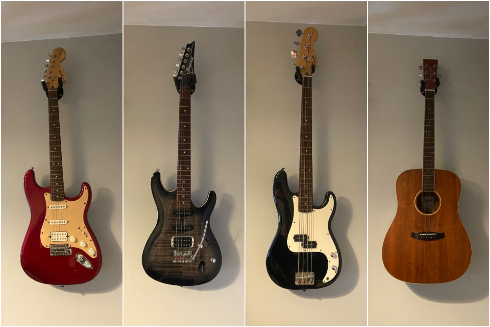
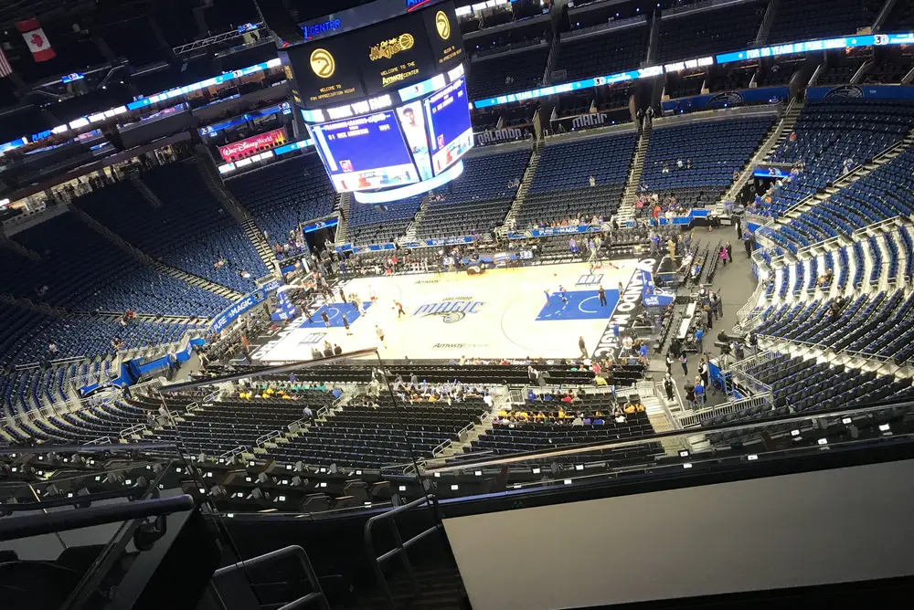
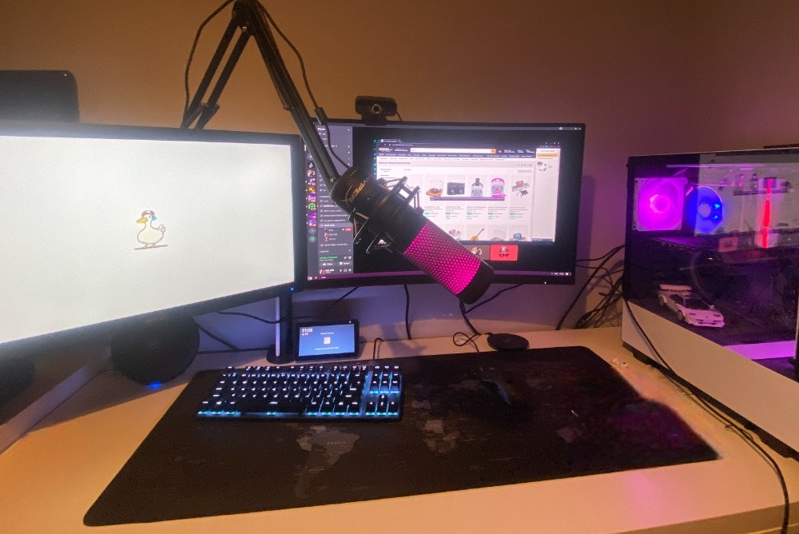
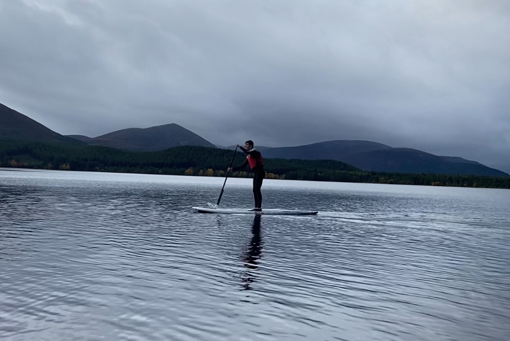

Growing Up
I was born in Aberdeen, Scotland and have lived there ever since. I still like at home with my mum, dad and sister as well as my cockapoo Max. During my time growing up I took part in many different hobbies – some of which I still participate in today. During my time at school, I met many of my long-term friends as well as finding my love for business subjects that has led to me being in the position I am in today.
Education
I attended Greenbrae Primary School from 2010 until 2017. In this time, I formed bonds with classmates who would be with me for the rest of my school life. My most memorable moments include going on a whole class trip at the end of our time at Greenbrae. During this time, we got to take part in challenging activities such as abseiling which brought the entire class together and was the perfect way to end our 7 years together.
I then attended Oldmachar Academy from 2017 until 2023. This is where my love of business subjects and accounting began. During my time at Oldmachar I completed courses in all three business subjects available – business management, accounting, and administration and IT – at Higher level. I also found that I was quite strong in science subjects and completed chemistry at an Advanced Higher level in my sixth year of studies.
Due to my love of accounting that began in secondary school, I decided to apply to accounting courses at several Universities including Aberdeen, Glasgow and Edinburgh. After receiving acceptance to these Universities, I decided to accept the offer from Aberdeen. This was due to numerous reasons such as the positive student reviews of the course; the opportunity to try numerous different subjects through Aberdeen’s elective system; as well as the closeness of the campus to where I was staying.
I started at The University of Aberdeen in September 2023 and in my first semester I took courses in Accounting, Economics, Finance and Management. This allowed me to broaden my knowledge in the business field by allowing me to gain experience in finance and economics which I had not previously had the opportunity to study.
Hobbies
Playing Guitar

I began playing guitar during my time at Academy. I formed a band with my friends during this time which encouraged me to play often. This has since become one of my main hobbies. I enjoy playing both acoustic and electric guitar as well as bass.
Basketball

I started playing basketball at a young age after deciding that I no longer wanted to play football. I joined a team called the Grampian Flyers and competed for many years during my time throughout school. I now play basketball with my friends during summer whenever I can.
Playing Video Games

I have played video games since a young age. I now use them as an opportunity to keep in touch with friends who have moved away for university. My passion for video games also lead me to building my own gaming computer which greatly increased my understanding of how they really work.
Paddle Boarding

I recently took up the hobby of paddleboarding after trying it for the first time in Stonehaven. After seeing dolphins swim alongside our boards and learning how fun the hobby is I decided to purchase my own board so I can paddleboard wherever possible.
Work Experience
My first job was delivering morning newspapers for Press and Journal. I had this job for over three years and enjoyed it greatly. I formed bonds with many of my customers and enjoyed seeing them each morning. This job taught me to be punctual as I had to deliver the newspapers before 9 o’clock in the morning Monday to Saturday.
My second job was working as a back of house team member in Pizza Hut. This was my favourite job that I have had. I really enjoyed learning how to make pizza as well as meeting all of the team members. It was a great experience working alongside a team as this was my first job that I was not working alone. I had this job for over a year and greatly enjoyed it.
My current job is working as a sales assistant at Marks and Spencer. I joined this job as a temporary position over the Christmas period however my position was made permanent shortly after. I took this position as I wanted a change from working in the kitchen. I feel like this has greatly increased my confidence in talking to people through constant interaction with customers.